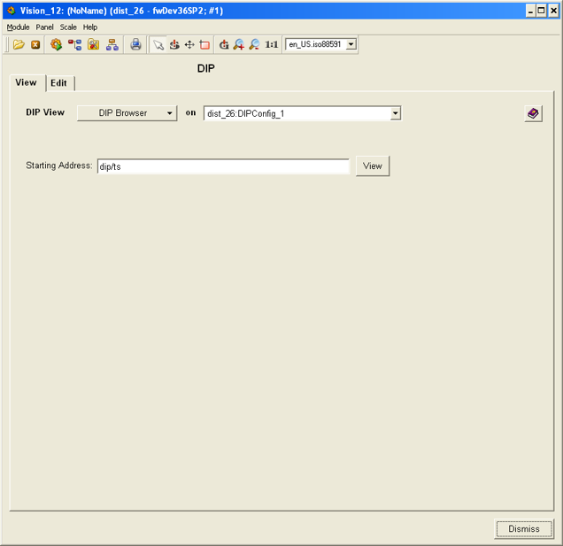
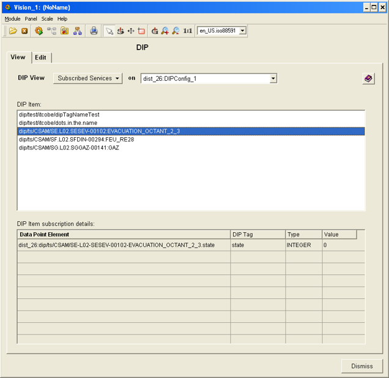
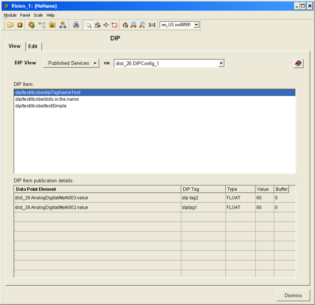

| Panel Name |
fwDipView.pnl |
|
| Introduction |
This multi-function panel allows to browse the DIP hierarchy, view the subscribed publications and the published publications. | |
| Instructions |
The header of the panel contains the button which allows the selection
of the mode of operation (modes of operation will be explained below) and
a selection box for selecting the DIP API manager config DP. Each DIP API
manager uses a separate config.
DIP Browser is the simple interface allowing browsing of the DIP hierarchy. User may provide the starting address to start the browsing or leave the default blank - to start from the root of the hierarchy. After clicking the "View" button, either the DIP TreeBrowser or DIP publication contents panel are invoked. This depends whether the starting address was pointing to a branch node or to a leaf node. Subscribed Services provides information about DIP items that the DIP API manager is currently being subscribed to. The view is being aggregated - the left part - contains the list of all the DIP items (DIP publications) that the API manager is being subscribed to. The right part of the panel contains the table which provides information relevant to currently selected DIP item. It shows which dpes are being subscribed to which DIP publication fields, their datatype and the value (value is not updated dynamically).Published Services provides information about the publications that are being published from within the PVSS by the DIP API manager. The view is being aggreagated - the left part - contains the list of all the publications that are being published. The right part of the panel contains the table which provides detailed information about currently selected publication. It shows which dpes are being published, under what tag, what is the datatype of the field and the value (value is not updated dynamically). If the publication contains only one field and the corresponding tag is empty - then the publication is a simple publication. |
|
| Restrictions | The values of the dpes are not updated dynamically. | |
|

|
|
 |
|
 |
| Dollar Parameters | ||
| Name | Description | |